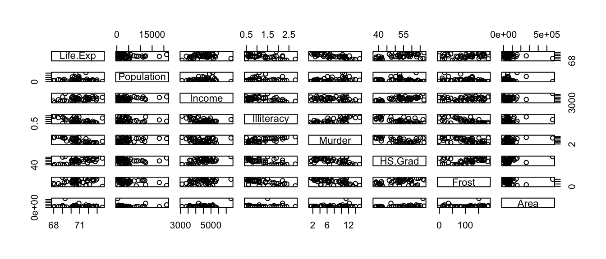

Chapter 7 Variable Selection
Given a set of data, we are interested in selecting the best subset of predictors for the following reasons:
Occam’s Razor tells us that from a list of plausible model or explanations, the simplest is usually the best. In the statistics sense, I want the smallest model that adequately explains the observed data patterns.
Unnecessary predictors add noise to the estimates of other quantities and will waste degrees of freedom, possibly increasing the estimate of \(\hat{\sigma}^{2}\).
We might have variables that are collinear.
The problems that arise in the diagnostics of a model will often lead a researcher to consider other models, for example to include a quadratic term to account for curvature. The model building process is often an iterative procedure where we build a model, examine the diagnostic plots and consider what could be added or modified to correct issues observed.
7.1 Nested Models
Often one model is just a simplification of another and can be obtained by setting some subset of \(\beta_{i}\) values equal to zero. Those models can be adequately compared by the F-test, which we have already made great use of.
We should be careful to note that we typically do not want to remove the main covariate from the model if the model uses the covariate in a more complicated fashion. For example, if my model is \[y=\beta_{0}+\beta_{1}x+\beta_{2}x^{2}+\epsilon\] where \(\epsilon\sim N\left(0,\sigma^{2}\right)\), then considering the simplification \(\beta_{1}=0\) and removing the effect of \(x\) is not desirable because that forces the parabola to be symmetric about \(x=0\). Similarly, if the model contains an interaction effect, then the removal of the main effect drastically alters the interpretation of the interaction coefficients and should be avoided. Often times removing a lower complexity term while keeping a higher complexity term results in unintended consequences and is typically not recommended.
7.2 Testing-Based Model Selection
Starting with a model that is likely too complex, consider a list of possible terms to remove and remove each in turn while evaluating the resulting model to the starting model using an F-test. Whichever term has the highest p-value is removed and the process is repeated until no more terms have non-significant p-values. This is often referred to as backward selection.
It should be noted that the cutoff value for significance here does not have to be \(\alpha=0.05\). If prediction performance is the primary goal, then a more liberal \(\alpha\) level is appropriate.
Starting with a model that is likely too small, consider adding terms until there are no more terms that when added to the model are significant. This is called forward selection.
This is a hybrid between forward selection and backward elimination. At every stage, a term is either added or removed. This is referred to as stepwise selection.
Stepwise, forward, and backward selection are commonly used but there are some issues.
Because of the “one-at-a-time” nature of the addition/deletion, the most optimal model might not be found.
p-values should not be treated literally. Because the multiple comparisons issue is completely ignored, the p-values are lower than they should be if multiple comparisons were accounted for. As such, it is possible to sort through a huge number of potential covariates and find one with a low p-value simply by random chance. This is “data dredging” and is a serious issue.
As a non-thinking algorithm, these methods ignore the science behind that data and might include two variables that are highly collinear or might ignore variables that are scientifically interesting.
7.2.1 Example - U.S. Life Expectancy
Using data from the Census Bureau we can look at the life expectancy as a response to a number of predictors. One R function that is often convenient to use is the update() function that takes a lm() object and adds or removes things from the formula. The notation . ~ . means to leave the response and all the predictors alone, while . ~ . + vnew will add the main effect of vnew to the model.
library(faraway)
library(dplyr) # for the %>% operator!
# Convert from a matrix to a data frame with state abbreviations
state.data <- data.frame(state.x77, row.names=state.abb)
str(state.data)## 'data.frame': 50 obs. of 8 variables:
## $ Population: num 3615 365 2212 2110 21198 ...
## $ Income : num 3624 6315 4530 3378 5114 ...
## $ Illiteracy: num 2.1 1.5 1.8 1.9 1.1 0.7 1.1 0.9 1.3 2 ...
## $ Life.Exp : num 69 69.3 70.5 70.7 71.7 ...
## $ Murder : num 15.1 11.3 7.8 10.1 10.3 6.8 3.1 6.2 10.7 13.9 ...
## $ HS.Grad : num 41.3 66.7 58.1 39.9 62.6 63.9 56 54.6 52.6 40.6 ...
## $ Frost : num 20 152 15 65 20 166 139 103 11 60 ...
## $ Area : num 50708 566432 113417 51945 156361 ...We should first look at the
pairs(Life.Exp ~ ., data=state.data)
I want to add a quadratic effect for HS.Grad rate and for Income. We’ll add it to the data frame and then perform the backward elimination method starting with the model with all predictors as main effects.
state.data$HS.Grad.2 <- state.data$HS.Grad ^ 2
state.data$Income.2 <- state.data$Income ^ 2
# explicitly define my starting model
m1 <- lm(Life.Exp ~ Population + Income + Illiteracy +
Murder + HS.Grad + Frost + HS.Grad.2 + Income.2, data=state.data)
#
# Define the same model, but using shorthand
# The '.' means everything else in the data frame
m1 <- lm( Life.Exp ~ ., data=state.data)
summary(m1)$coefficients %>% round(digits=3)## Estimate Std. Error t value Pr(>|t|)
## (Intercept) 63.413 7.449 8.513 0.000
## Population 0.000 0.000 1.310 0.198
## Income 0.004 0.003 1.605 0.116
## Illiteracy 0.255 0.388 0.656 0.515
## Murder -0.300 0.049 -6.088 0.000
## HS.Grad -0.053 0.214 -0.248 0.806
## Frost -0.004 0.003 -1.374 0.177
## Area 0.000 0.000 0.656 0.516
## HS.Grad.2 0.001 0.002 0.460 0.648
## Income.2 0.000 0.000 -1.618 0.114The signs make reasonable sense (higher murder rates decrease life expectancy) but covariates like Income are not significant, which is surprising. We will first remove the term with the highest p-value, which is the state’s HS.Grad. However, I don’t want to remove the lower-order graduation term and keep the squared-term. So instead I will remove both of them since they are the highest p-values. Notice that HS.Grad is correlated with Income and Illiteracy.
# Remove Graduation Rate from the model from the model
m1 <- update(m1, .~. - HS.Grad - HS.Grad.2)
summary(m1)$coefficients %>% round(digits=3)## Estimate Std. Error t value Pr(>|t|)
## (Intercept) 62.497 6.395 9.772 0.000
## Population 0.000 0.000 0.838 0.407
## Income 0.005 0.003 1.804 0.078
## Illiteracy -0.076 0.358 -0.212 0.833
## Murder -0.308 0.047 -6.573 0.000
## Frost -0.006 0.003 -1.948 0.058
## Area 0.000 0.000 1.688 0.099
## Income.2 0.000 0.000 -1.750 0.087# Next remove Illiteracy
m1 <- update(m1, .~. - Illiteracy)
summary(m1)$coefficients %>% round(digits=3)## Estimate Std. Error t value Pr(>|t|)
## (Intercept) 61.779 5.367 11.510 0.000
## Population 0.000 0.000 0.860 0.394
## Income 0.005 0.002 2.165 0.036
## Murder -0.312 0.043 -7.304 0.000
## Frost -0.006 0.003 -2.261 0.029
## Area 0.000 0.000 1.736 0.090
## Income.2 0.000 0.000 -2.069 0.045# And Population...
m1 <- update(m1, .~. - Population)
summary(m1)$coefficients %>% round(digits=3)## Estimate Std. Error t value Pr(>|t|)
## (Intercept) 59.985 4.931 12.166 0.000
## Income 0.006 0.002 2.702 0.010
## Murder -0.297 0.039 -7.633 0.000
## Frost -0.006 0.003 -2.471 0.017
## Area 0.000 0.000 1.746 0.088
## Income.2 0.000 0.000 -2.533 0.015# Remove Area from the model
m1 <- update(m1, .~. - Area)
summary(m1)$coefficients %>% round(digits=3)## Estimate Std. Error t value Pr(>|t|)
## (Intercept) 63.685 4.552 13.990 0.000
## Income 0.004 0.002 2.078 0.043
## Murder -0.285 0.039 -7.278 0.000
## Frost -0.006 0.003 -2.235 0.030
## Income.2 0.000 0.000 -1.864 0.069The removal of Income.2 is a tough decision because the p-value is very close to \(\alpha=0.05\) and might be left in if it makes model interpretation easier or if the researcher feels a quadratic effect in income is appropriate (perhaps rich people are too stressed?).
summary(m1)##
## Call:
## lm(formula = Life.Exp ~ Income + Murder + Frost + Income.2, data = state.data)
##
## Residuals:
## Min 1Q Median 3Q Max
## -1.44396 -0.53231 -0.04994 0.50160 1.51754
##
## Coefficients:
## Estimate Std. Error t value Pr(>|t|)
## (Intercept) 6.369e+01 4.552e+00 13.990 < 2e-16 ***
## Income 4.017e-03 1.933e-03 2.078 0.0434 *
## Murder -2.852e-01 3.918e-02 -7.278 3.95e-09 ***
## Frost -5.686e-03 2.544e-03 -2.235 0.0304 *
## Income.2 -3.955e-07 2.121e-07 -1.864 0.0688 .
## ---
## Signif. codes: 0 '***' 0.001 '**' 0.01 '*' 0.05 '.' 0.1 ' ' 1
##
## Residual standard error: 0.7619 on 45 degrees of freedom
## Multiple R-squared: 0.7042, Adjusted R-squared: 0.6779
## F-statistic: 26.78 on 4 and 45 DF, p-value: 2.112e-11We are left with a model that adequately explains Life.Exp but we should be careful to note that just because a covariate was removed from the model does not imply that it isn’t related to the response. For example, being a high school graduate is highly correlated with not being illiterate as is Income and thus replacing Illiteracy shows that illiteracy is associated with lower life expectancy, but it is not as predictive as Income.
m2 <- lm(Life.Exp ~ Illiteracy+Murder+Frost, data=state.data)
summary(m2)##
## Call:
## lm(formula = Life.Exp ~ Illiteracy + Murder + Frost, data = state.data)
##
## Residuals:
## Min 1Q Median 3Q Max
## -1.59010 -0.46961 0.00394 0.57060 1.92292
##
## Coefficients:
## Estimate Std. Error t value Pr(>|t|)
## (Intercept) 74.556717 0.584251 127.611 < 2e-16 ***
## Illiteracy -0.601761 0.298927 -2.013 0.04998 *
## Murder -0.280047 0.043394 -6.454 6.03e-08 ***
## Frost -0.008691 0.002959 -2.937 0.00517 **
## ---
## Signif. codes: 0 '***' 0.001 '**' 0.01 '*' 0.05 '.' 0.1 ' ' 1
##
## Residual standard error: 0.7911 on 46 degrees of freedom
## Multiple R-squared: 0.6739, Adjusted R-squared: 0.6527
## F-statistic: 31.69 on 3 and 46 DF, p-value: 2.915e-11Notice that the \(R^{2}\) values for both models are quite similar \(0.7042\) vs \(0.6739\) but the first model with the higher \(R^{2}\) has one more predictor variable? Which model should I prefer? I can’t do an F-test because these models are not nested.
7.3 Criterion Based Procedures
7.3.1 Information Criterions
It is often necessary to compare models that are not nested. For example, I might want to compare \[y=\beta_{0}+\beta_{1}x+\epsilon\] vs \[y=\beta_{0}+\beta_{2}w+\epsilon\]
This comparison comes about naturally when doing forward model selection and we are looking for the “best” covariate to add to the model first.
Akaike introduced his criterion (which he called “An Information Criterion”) as \[AIC=\underset{\textrm{decreases if RSS decreases}}{\underbrace{-2\,\log L\left(\hat{\boldsymbol{\beta}},\hat{\sigma}|\,\textrm{data}\,\right)}}+\underset{\textrm{increases as p increases}}{\underbrace{2p}}\] where \(L\left(\hat{\boldsymbol{\beta}}|\,\textrm{data}\,\right)\) is the likelihood function and \(p\) is the number of elements in the \(\hat{\boldsymbol{\beta}}\) vector and we regard a lower AIC value as better. Notice the \(2p\) term is essentially a penalty on adding addition covariates so to lower the AIC value, a new predictor must lower the negative log likelihood more than it increases the penalty.
To convince ourselves that the first summand decreases with decreasing RSS in the standard linear model, we examine the likelihood function \[\begin{aligned} f\left(\boldsymbol{y}\,|\,\boldsymbol{\beta},\sigma,\boldsymbol{X}\right) &= \frac{1}{\left(2\pi\sigma^{2}\right)^{n/2}}\exp\left[-\frac{1}{2\sigma^{2}}\left(\boldsymbol{y}-\boldsymbol{X}\boldsymbol{\beta}\right)^{T}\left(\boldsymbol{y}-\boldsymbol{X}\boldsymbol{\beta}\right)\right] \\ &= L\left(\boldsymbol{\beta},\sigma\,|\,\boldsymbol{y},\boldsymbol{X}\right) \end{aligned}\] and we could re-write this as \[\begin{aligned} \log L\left(\hat{\boldsymbol{\beta}},\hat{\sigma}\,|\,\textrm{data}\right) &= -\log\left(\left(2\pi\hat{\sigma}^{2}\right)^{n/2}\right)-\frac{1}{2\hat{\sigma}^{2}}\left(\boldsymbol{y}-\boldsymbol{X}\hat{\boldsymbol{\beta}}\right)^{T}\left(\boldsymbol{y}-\boldsymbol{X}\hat{\boldsymbol{\beta}}\right) \\ &= -\frac{n}{2}\log\left(2\pi\hat{\sigma}^{2}\right)-\frac{1}{2\hat{\sigma}^{2}}\left(\boldsymbol{y}-\boldsymbol{X}\hat{\boldsymbol{\beta}}\right)^{T}\left(\boldsymbol{y}-\boldsymbol{X}\hat{\boldsymbol{\beta}}\right) \\ &= -\frac{1}{2}\left[n\log\left(2\pi\hat{\sigma}^{2}\right)+\frac{1}{\hat{\sigma}^{2}}\left(\boldsymbol{y}-\boldsymbol{X}\hat{\boldsymbol{\beta}}\right)^{T}\left(\boldsymbol{y}-\boldsymbol{X}\hat{\boldsymbol{\beta}}\right)\right] \\ &= -\frac{1}{2}\left[+n\log\left(2\pi\right)+n\log\hat{\sigma}^{2}+\frac{1}{\hat{\sigma}^{2}}RSS\right] \end{aligned}\]
It isn’t clear what we should do with the \(n\log\left(2\pi\right)\) term in the \(\log L()\) function. There are some compelling reasons to ignore it and just use the second, and there are reasons to use both terms. Unfortunately, statisticians have not settled on one convention or the other and different software packages might therefore report different values for AIC.
As a general rule of thumb, if the difference in AIC values is less than two then the models are not significantly different, differences between 2 and 4 AIC units are marginally significant and any difference greater than 4 AIC units is highly significant.
Notice that while this allows us to compare models that are not nested, it does require that the same data are used to fit both models. Because I could start out with my data frame including both \(x\) and \(x^{2}\), (or more generally \(x\) and \(f\left(x\right)\) for some function \(f()\)) you can regard a transformation of a covariate as “the same data”. However, a transformation of a y-variable is not and therefore we cannot use AIC to compare a models log(y) ~ x versus the model y ~ x.
Another criterion that might be used is Bayes Information Criterion (BIC) which is
\[BIC=-2\,\log L\left(\hat{\boldsymbol{\beta}},\hat{\sigma}|\,\textrm{data}\,\right)+p\log n\]
and this criterion punishes large models more than AIC does (because \(\log n>2\) for \(n\ge8\))
The AIC value of a linear model can be found using the AIC() on a lm() object.
AIC(m1)## [1] 121.4293AIC(m2)## [1] 124.2947Because the AIC value for the first model is lower, we would prefer the first model that includes both Income and Income.2 compared to model 2, which was Life.Exp ~ Illiteracy+Murder+Frost.
7.3.2 Adjusted R-sq
One of the problems with \(R^{2}\) is that it makes no adjustment for how many parameters in the model. Recall that \(R^{2}\) was defined as \[R^{2}=\frac{RSS_{S}-RSS_{C}}{RSS_{S}}=1-\frac{RSS_{C}}{RSS_{S}}\] where the simple model was the intercept only model. We can create an \(R_{adj}^{2}\) statistic that attempts to add a penalty for having too many parameters by defining \[R_{adj}^{2}=1-\frac{RSS_{C}/\left(n-p\right)}{RSS_{S}/\left(n-1\right)}\] With this adjusted definition, adding a variable to the model that has no predictive power will decrease \(R_{adj}^{2}\).
7.3.3 Example
Returning to the life expectancy data, we could start with a simple model add covariates to the model that have the lowest AIC values. R makes this easy with the function add1() which will take a linear model (which includes the data frame that originally defined it) and will sequentially add all of the possible terms that are not currently in the model and report the AIC values for each model.
# Define the biggest model I wish to consider
biggest <- Life.Exp ~ Population + Income + Illiteracy + Murder +
HS.Grad + Frost + Area + HS.Grad.2 + Income.2
# Define the model I wish to start with
m <- lm(Life.Exp ~ 1, data=state.data)
add1(m, scope=biggest) # what is the best addition to make?## Single term additions
##
## Model:
## Life.Exp ~ 1
## Df Sum of Sq RSS AIC
## <none> 88.299 30.435
## Population 1 0.409 87.890 32.203
## Income 1 10.223 78.076 26.283
## Illiteracy 1 30.578 57.721 11.179
## Murder 1 53.838 34.461 -14.609
## HS.Grad 1 29.931 58.368 11.737
## Frost 1 6.064 82.235 28.878
## Area 1 1.017 87.282 31.856
## HS.Grad.2 1 27.414 60.885 13.848
## Income.2 1 7.464 80.835 28.020Clearly the additiona of Murder to the model results in the lowest AIC value, so we will add Murder to the model. Notice the <none> row corresponds to the model m which we started with and it has a RSS=88.299. For each model considered, R will calculate the RSS_{C} for the new model and will calculate the difference between the starting model and the more complicated model and display this in the Sum of Squares column.
m <- update(m, . ~ . + Murder) # add murder to the model
add1(m, scope=biggest) # what should I add next?## Single term additions
##
## Model:
## Life.Exp ~ Murder
## Df Sum of Sq RSS AIC
## <none> 34.461 -14.609
## Population 1 4.0161 30.445 -18.805
## Income 1 2.4047 32.057 -16.226
## Illiteracy 1 0.2732 34.188 -13.007
## HS.Grad 1 4.6910 29.770 -19.925
## Frost 1 3.1346 31.327 -17.378
## Area 1 0.4697 33.992 -13.295
## HS.Grad.2 1 4.4396 30.022 -19.505
## Income.2 1 1.8972 32.564 -15.441There is a companion function to add1() that finds the best term to drop. It is conveniently named drop1() but here the scope parameter defines the smallest model to be considered.
It would be nice if all of this work was automated. Again, R makes our life easy and the function step() does exactly this. The set of models searched is determined by the scope argument which can be a list of two formulas with components upper and lower or it can be a single formula, or it can be blank. The right-hand-side of its lower component defines the smallest model to be considered and the right-hand-side of the upper component defines the largest model to be considered. If scope is a single formula, it specifies the upper component, and the lower model taken to be the intercept-only model. If scope is missing, the initial model is used as the upper model.
smallest <- Life.Exp ~ 1
biggest <- Life.Exp ~ Population + Income + Illiteracy +
Murder + HS.Grad + Frost + Area + HS.Grad.2 + Income.2
m <- lm(Life.Exp ~ Income, data=state.data)
step(m, scope=list(lower=smallest, upper=biggest))## Start: AIC=26.28
## Life.Exp ~ Income
##
## Df Sum of Sq RSS AIC
## + Murder 1 46.020 32.057 -16.226
## + Illiteracy 1 21.109 56.968 12.523
## + HS.Grad 1 19.770 58.306 13.684
## + Income.2 1 19.062 59.015 14.288
## + HS.Grad.2 1 17.193 60.884 15.847
## + Area 1 5.426 72.650 24.682
## + Frost 1 3.188 74.889 26.199
## <none> 78.076 26.283
## + Population 1 1.781 76.295 27.130
## - Income 1 10.223 88.299 30.435
##
## Step: AIC=-16.23
## Life.Exp ~ Income + Murder
##
## Df Sum of Sq RSS AIC
## + Frost 1 3.918 28.138 -20.745
## + Income.2 1 3.036 29.021 -19.200
## + Population 1 2.552 29.504 -18.374
## + HS.Grad 1 2.388 29.668 -18.097
## + HS.Grad.2 1 2.199 29.857 -17.780
## <none> 32.057 -16.226
## - Income 1 2.405 34.461 -14.609
## + Illiteracy 1 0.011 32.046 -14.242
## + Area 1 0.000 32.057 -14.226
## - Murder 1 46.020 78.076 26.283
##
## Step: AIC=-20.74
## Life.Exp ~ Income + Murder + Frost
##
## Df Sum of Sq RSS AIC
## + HS.Grad 1 2.949 25.189 -24.280
## + HS.Grad.2 1 2.764 25.375 -23.914
## + Income.2 1 2.017 26.121 -22.465
## + Population 1 1.341 26.797 -21.187
## <none> 28.138 -20.745
## + Illiteracy 1 0.950 27.189 -20.461
## + Area 1 0.147 27.991 -19.007
## - Income 1 3.188 31.327 -17.378
## - Frost 1 3.918 32.057 -16.226
## - Murder 1 46.750 74.889 26.199
##
## Step: AIC=-24.28
## Life.Exp ~ Income + Murder + Frost + HS.Grad
##
## Df Sum of Sq RSS AIC
## + Population 1 1.887 23.302 -26.174
## + Income.2 1 1.864 23.326 -26.124
## - Income 1 0.182 25.372 -25.920
## <none> 25.189 -24.280
## + HS.Grad.2 1 0.218 24.972 -22.714
## + Illiteracy 1 0.131 25.058 -22.541
## + Area 1 0.058 25.131 -22.395
## - HS.Grad 1 2.949 28.138 -20.745
## - Frost 1 4.479 29.668 -18.097
## - Murder 1 32.877 58.067 15.478
##
## Step: AIC=-26.17
## Life.Exp ~ Income + Murder + Frost + HS.Grad + Population
##
## Df Sum of Sq RSS AIC
## - Income 1 0.006 23.308 -28.161
## <none> 23.302 -26.174
## + Income.2 1 0.790 22.512 -25.899
## - Population 1 1.887 25.189 -24.280
## + HS.Grad.2 1 0.006 23.296 -24.187
## + Illiteracy 1 0.004 23.298 -24.182
## + Area 1 0.000 23.302 -24.174
## - Frost 1 3.037 26.339 -22.048
## - HS.Grad 1 3.495 26.797 -21.187
## - Murder 1 34.739 58.041 17.456
##
## Step: AIC=-28.16
## Life.Exp ~ Murder + Frost + HS.Grad + Population
##
## Df Sum of Sq RSS AIC
## <none> 23.308 -28.161
## + Income.2 1 0.031 23.277 -26.229
## + HS.Grad.2 1 0.007 23.301 -26.177
## + Income 1 0.006 23.302 -26.174
## + Illiteracy 1 0.004 23.304 -26.170
## + Area 1 0.001 23.307 -26.163
## - Population 1 2.064 25.372 -25.920
## - Frost 1 3.122 26.430 -23.877
## - HS.Grad 1 5.112 28.420 -20.246
## - Murder 1 34.816 58.124 15.528##
## Call:
## lm(formula = Life.Exp ~ Murder + Frost + HS.Grad + Population,
## data = state.data)
##
## Coefficients:
## (Intercept) Murder Frost HS.Grad Population
## 7.103e+01 -3.001e-01 -5.943e-03 4.658e-02 5.014e-05Notice that our model selected by step() is not the same model we obtained when we started with the biggest model and removed things based on p-values.
The log-likelihood is only defined up to an additive constant, and there are different conventional constants used. This is more annoying than anything because all we care about for model selection is the difference between AIC values of two models and the additive constant cancels. The only time it matters is when you have two different ways of extracting the AIC values. Recall the model we fit using the top-down approach was
# m1 was
m1 <- lm(Life.Exp ~ Income + Murder + Frost + Income.2, data = state.data)
AIC(m1)## [1] 121.4293and the model selected by the stepwise algorithm was
m3 <- lm(Life.Exp ~ Murder + Frost + HS.Grad + Population, data = state.data)
AIC(m3)## [1] 115.7326Because step() and AIC() are following different conventions the absolute value of the AICs are different, but the difference between the two is constant no matter which function we use.
First we calculate the difference using the AIC() function:
AIC(m1) - AIC(m3)## [1] 5.696681and next we use add1() on both models to see what the AIC values for each.
add1(m1, scope=biggest)## Single term additions
##
## Model:
## Life.Exp ~ Income + Murder + Frost + Income.2
## Df Sum of Sq RSS AIC
## <none> 26.121 -22.465
## Population 1 0.42412 25.697 -21.283
## Illiteracy 1 0.10097 26.020 -20.658
## HS.Grad 1 2.79527 23.326 -26.124
## Area 1 1.69309 24.428 -23.815
## HS.Grad.2 1 2.79698 23.324 -26.127add1(m3, scope=biggest)## Single term additions
##
## Model:
## Life.Exp ~ Murder + Frost + HS.Grad + Population
## Df Sum of Sq RSS AIC
## <none> 23.308 -28.161
## Income 1 0.0060582 23.302 -26.174
## Illiteracy 1 0.0039221 23.304 -26.170
## Area 1 0.0007900 23.307 -26.163
## HS.Grad.2 1 0.0073439 23.301 -26.177
## Income.2 1 0.0314248 23.277 -26.229Using these results, we can calculate the difference in AIC values to be the same as we calculated before \[\begin{aligned} -22.465--28.161 &= -22.465+28.161 \\ &= 5.696 \end{aligned}\]
7.4 Exercises
Consider the
prostatedata from thefarawaypackage. The variablelpsais a measurement of a prostate specific antigen which higher levels are indicative of prostate cancer. Uselpsaas the response and all the other variables as predictors (no interactions). Determine the “best” model using:Backward elimination using the analysis of variance F-statistic as the criteria.
Forward selection using AIC as the criteria.
Again from the
farawaypackage, use thedivusawhich has diviorce rates for each year from 1920-1996 along with other population information for each year. Usedivorceas the response variable and all other variables as the predictors.Determine the best model using stepwise selection starting from the intercept only model and the most complex model being all main effects (no interactions). Use the F-statistic to determine significance. Note: add1(), drop1(), and step() allow an option of test=‘F’ to use an F-test instead of AIC.
Following the stepwise selection, comment on the relationship between p-values used and the AIC difference observed. Do the AIC rules of thumb match the p-value interpretation?